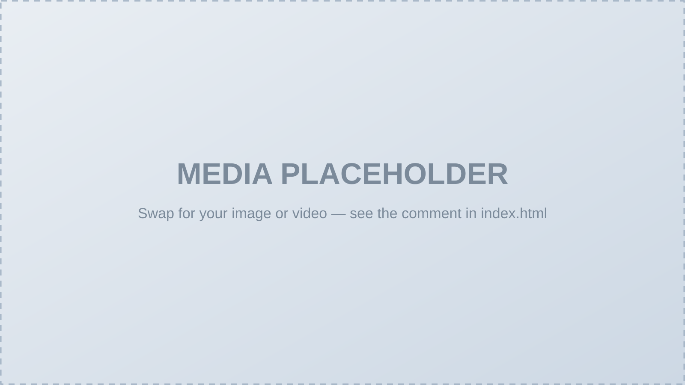

Abstract. Human manipulation videos are a convenient and intuitive source for robot learning. However, directly transferring human dexterity to robots remains challenging due to perception errors and embodiment gap. To address this, we introduce Video2Sim2Real, a full-stack framework for autonomous skill acquisition from a single human manipulation video. Our framework first uses off-the-shelf foundation models to reconstruct a simulator-ready digital twin and extract robot and object motion priors. Rather than treating the extracted robot motion as a reliable reference throughout execution, our key idea is to recover and leverage the most fundamental sources of supervision from the demonstrated skill: we identify object-centric keyframes to optimize the corresponding robot configurations using object information from the simulator, and use these configurations as anchors that refine the robot motion such that it ultimately has the desired impact on the environment. To bridge the remaining sim-to-real gap, we introduce a sim-to-real strategy that decouples robustness to noisy and incomplete perception from variations in hand-object interaction dynamics. Specifically, we learn to recalibrate robot configurations from noisy real-world point clouds via IL, and leverage residual RL to perform local finger-level adaptations to ensure for robust and effective interactions. Finally, a collision-aware motion planning module enables spatial generalization to novel object configurations. Across several everyday manipulation tasks, Video2Sim2Real improves simulated task success, safety, and trajectory coherence over numerous baselines, and achieves better sim-to-real transfer than existing techniques. These results demonstrate a promising path toward autonomous dexterous skill acquisition from human videos.
Autonomous
Acquire dexterous skills from a single human manipulation video — without robot demonstrations or expert intervention.
Method
We develop a full-stack framework, Video2Sim2Real, for autonomous skill acquisition from the human manipulation videos. The framework consists of four main modules. First, an off-the-shelf perception module leverages foundation models to automatically reconstruct a digital-twin simulator as the refinement playground and extract robot and object motions. Second, a refinement module uses the simulator, key manipulation frames identified from object motions, and corresponding object information to optimize robot configurations for trajectory interpolation. Third, a sim-to-real transfer module learns both IL and RL policies to enable reliable real-world execution. Finally, an optional spatial generalization module uses the collision-aware motion planner CuRobo to generate robot trajectories for novel object configurations.
Local Generalization
One-shot videos
From a single demonstration, the learned skill generalizes to local object-pose variations.
BibTeX
@article{video2sim2real,
title = {Video2Sim2Real: Full-Stack Autonomous Dexterous Acquisition from a Single Human Video},
author = {Anonymous Author(s)},
journal = {Under review},
year = {2026}
}